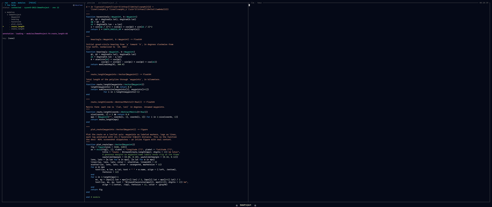

Modes
A mode is a switchable root for the navigation tree. Every mode has the same shape — a parent → current → children hierarchy shown as a collapsible outline — and a hotkey swaps which tree fills it. Cursor position is preserved per mode across switches, so jumping from Files to Modules and back lands you exactly where you left each one.

Modules mode over the demo project: module → definitions → methods of a two-method function.Modes are a planned plugin surface: the design is a Mode subtype with tree_root / tree_children / preview_for methods adding a new root, and the core modes shipping as methods on that same type with no privileged path. Today the nav roots are fixed in the frontend (Files, Modules, Sessions, Hosts) and the kernel hosts the modes directly; the mode-plugin seam is not yet wired. See The Dispatch ABI and Writing a Mode Plugin.
The same shape everywhere
The window's navigation pane is a single collapsible tree: a parent context, the current level, and its children, shown through nesting. What changes between modes is what the tree enumerates and what the preview pane shows for the cursored node.
| Mode | Level 1 → Level 2 → Level 3 | Preview |
|---|---|---|
| Project | Sections → contents → subitems | Rendered markdown / task detail |
| Files | Parent dir → current dir → contents | File at appropriate fidelity |
| Modules | Modules → functions → methods | Method source + concept artifact |
| Types | Types → facets (fields/methods/sub) → members | Type def + meaning + data shape |
| Math | Concept areas → concepts → derivations/impls | LaTeX + implementing functions |
| Outputs | Recent runs → contents → artifacts | PNG / plot / JSON / MP4 |
| Agents | Tasks → timeline → step detail | Diff / live tail / message |
This table is the conceptual mode set — the design target. Not all of it is built yet; see the status breakdown below.
Built today vs planned
| Mode | Status |
|---|---|
| Files | Built. Filesystem navigation with previews. |
| Modules | Built, read-only. Structural view derived from JuliaSyntax.jl. |
| Types | Planned (after phase 1). |
| Math | Planned (after phase 1). |
| Outputs | Planned (after phase 1). |
| Agents | Partly here. Multi-agent is real today — concurrent Claude Code sessions coordinated over the comm bus and surfaced in the Sessions view. What is pinned for later is this dedicated mode: an in-UI tasks → timeline → step-detail view for orchestrating them. |
The conceptual set above describes where modes are going. What you can switch between today is the set of operational nav modes bound in the keymap, below.
The nav modes bound today
The frontend binds four navigation modes. Each is a single-character chord that is active only in navigation focus — in the pty panes, the editor, or a prompt, those characters stay literal text.
| Key | Mode | What it roots the tree at |
|---|---|---|
f | Files | the project filesystem |
m | Modules | modules → functions → methods (read-only, from JuliaSyntax.jl) |
s | Sessions | workspaces — the projects this backend is hosting |
h | Hosts | the remote hosts you can target |
Files and Modules are the two conceptual modes wired up so far. Sessions and Hosts are operational modes — they navigate the deployment surface (which project, which machine) rather than the concept hierarchy of a single project.
Sessions mode (s)
Sessions mode lists the workspaces the backend knows about and lets you commit a new one. The session picker uses two chords on the cursored directory:
| Chord | Action |
|---|---|
Enter | Create a workspace and start the comm-aware orchestrator agent in it. |
Shift+Enter | Create a bare workspace — no LLM agent, just a plain shell / REPL. |
One backend daemon hosts one Julia kernel per workspace, routed by workspace_id, so switching workspaces is fast and does not tear down the kernel — switching is "like tmux windows in the same session." You can also cycle the active workspace directly with Shift+ArrowRight / Shift+ArrowLeft.
Hosts mode (h)
Hosts mode picks which remote the frontend targets. The choice is persisted, and every mechanism that re-opens the connection — launcher startup, the tunnel supervisor after a wake or wifi flap, and frontend transport reconnect — routes to the same persisted host rather than silently bouncing to a different one. There is no live in-session host swap by design; switching hosts is "pick a host, quit, relaunch," because a new host means cold-starting that host's daemon state.
Switching, focus, and layout keys
Mode switches share the keymap with pane focus and layout. The relevant chords:
| Chord | Action |
|---|---|
f / m / s / h | switch nav mode (nav focus only) |
Shift+ArrowLeft / Shift+ArrowRight | cycle the active workspace |
Ctrl+ArrowLeft/Right/Up/Down | move pane focus (4-way, spatial) |
Alt+= | maximize the focused pane; Escape restores |
Ctrl+j / Ctrl+t / Ctrl+m | toggle the REPL / Terminal / Monitor drawers |
? | toggle the help overlay |
Because the mode keys are plain single characters, they are deliberately scoped to navigation focus — the keymap matches them only when a nav pane is focused, so typing f into the REPL or the editor inserts an f. The authoritative chord list lives in Keybindings.